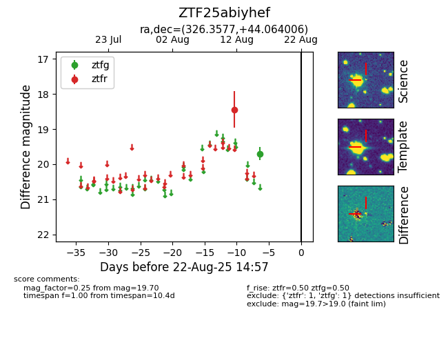

Target ZTF25abiyhef at 2025-08-22 15:21, see:
FINK: fink-portal.org/ZTF25abiyhef
Lasair: lasair-ztf.lsst.ac.uk/objects/ZTF25abiyhef
ALeRCE: alerce.online/object/ZTF25abiyhef
alt names
ZTF25abiyhef (ztf,alerce)
coordinates:
equatorial (ra, dec) = (326.3577,+44.06401)
galactic (l, b) = (91.2478,-7.06978)
photometry
last atlasc=15.95, atlaso=17.26, ztfg=19.70, ztfr=18.44
1 atlasc, 8 atlaso, 1 ztfg, 1 ztfr detections
